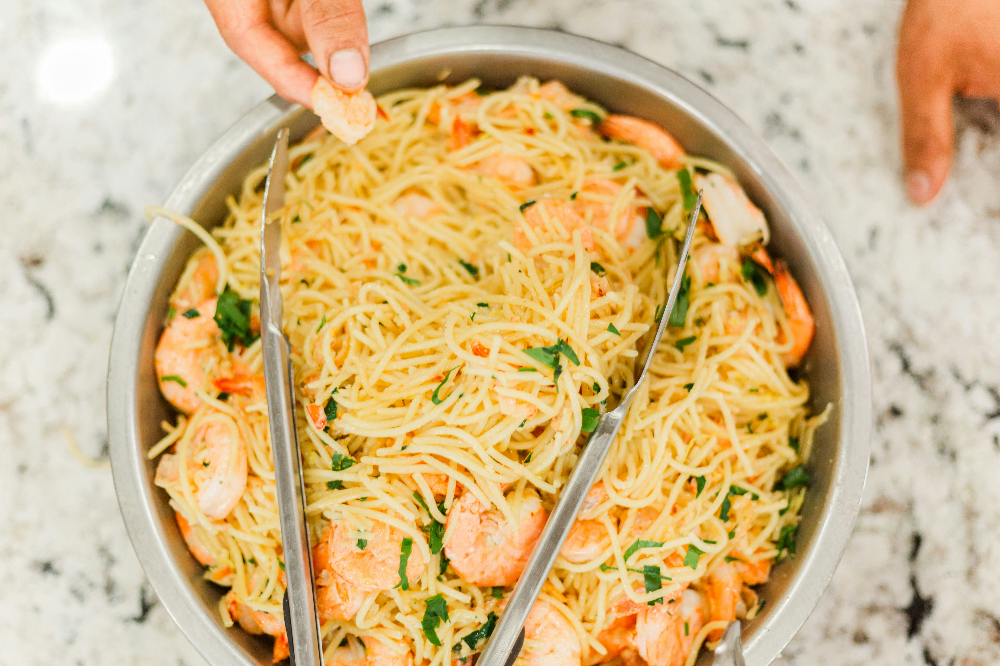

Shrimp Fettucine Alfredo

Home
Description:
Shrimp Alfredo is a creamy, indulgent pasta dish that combines tender, succulent shrimp with a rich, velvety Alfredo sauce tossed over fettuccine noodles. The buttery garlic flavor of the shrimp perfectly complements the smooth, cheesy sauce made with Parmesan and cream, creating a comforting and elegant meal that’s surprisingly easy to make at home. Whether you’re cooking for a cozy night in or hosting a dinner with friends, Shrimp Alfredo is a crowd-pleaser that feels both luxurious and satisfying.
Ingredients:
- 1 pound fettuccini pasta
- 1 tablespoon butter
- 1 pound cooked shrimp - peeled and deveined
- 4 cloves garlic, minced
- 1 cup half-and-half or heavy cream
- 6 tablespoons grated Parmesan cheese
- 1 tablespoon chopped fresh parsley
- salt to taste
Steps:
- Fill a large pot with lightly salted water and bring to a rolling boil. Cook fettuccine at a boil until tender yet firm to the bite, about 8 minutes. Drain.
- Heat butter in a large skillet over medium heat. Cook and stir shrimp and garlic in butter for 1 minute. Pour in half-and-half; stir. Add Parmesan cheese, 1 tablespoon at a time, stirring constantly. Mix in parsley; season with salt. Simmer, stirring frequently, until sauce is thickened.
- Stir fettuccine into sauce until evenly coated; serve hot.